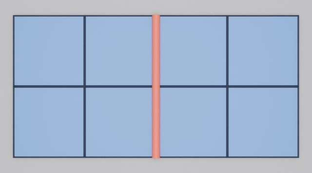
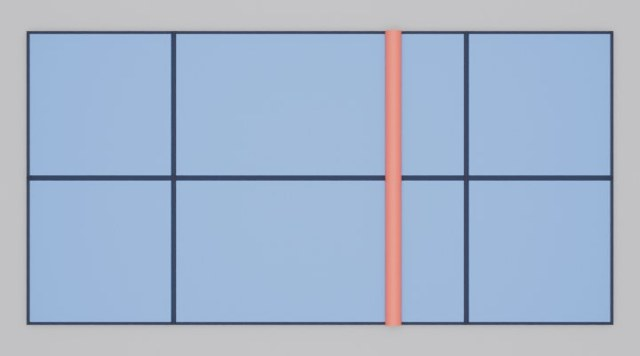
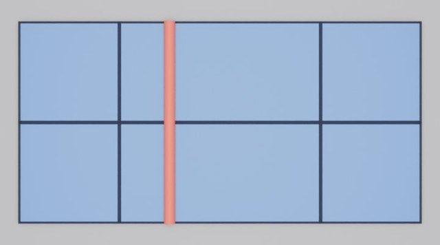

Bonus lesson
Edge Slide
Edge Slide slides one or more edges across the adjacent faces. In Edit Mode, choose Edge › Edge Slide or press G twice (G, G). It is a good way to move a loop cut to a better spot without changing the shape of the surface. The selection must define a valid loop.



How it moves
By default, the vertices of the loop move by a percentage of the distance between their original position and the adjacent edge loop, regardless of the edge lengths.
Options
- Factor: the amount of slide. Negative values slide toward one face, positive values toward the other. It is also shown in the 3D Viewport footer.
- Even (E): forces the loop to match the shape of the adjacent edge loop. Flipped (F) switches which of the two neighboring loops it matches.
- Clamp (Alt or C): toggles clamping the slide within the edge extents.
- Mirror Editing: applies the operation to the symmetrical parts of the mesh, if present.
- Correct UVs: fixes UV coordinates, if they exist, to avoid distorted images.
Read the manual page on Edge Slide.
Try it
This exercise is our own suggestion and has not been run step by step in the GUI. Add a cube, press Ctrl+R and click to add a loop cut around it, then press Enter. In Edge select mode, press G twice and move the mouse to slide the loop. Click to confirm, or press Esc to cancel.